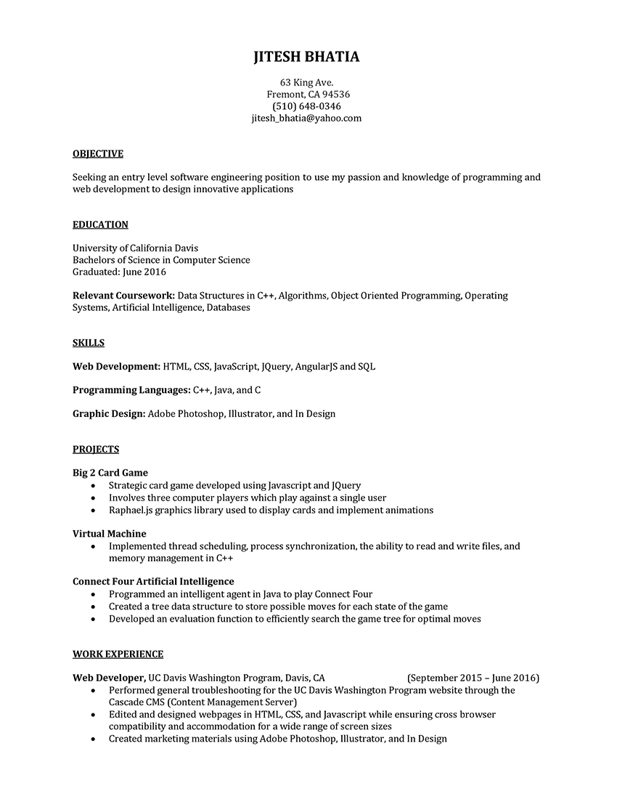

Jitesh Bhatia
Software Developer
Bio
My name is Jitesh Bhatia, and I am an aspiring software developer. However, I was not always set on this path. When I started school at the University of California - Davis, I wasn't sure what career to pursue. Initially, I began by majoring in Economics. My classes involved market analysis, studying income statements and balance sheets, among other things. I truly enjoyed it, but my inner creativity felt bottled up. I wanted to see my ideas come to life, and Computer Science has given me this freedom. My first programming course was in C, and I have continued to expand my programming repertoire with languages such as C++, Java and Javascript. My progression along this path of learning software has helped me expand upon my inner creativity, and allowed it to grow and expand to previously unreached levels. I hope that my interest and dedication to software development will help me make a substantial positive impact to the industry today.

Resource Manual
Designed pages for the Washington Program Resource Manual in Adobe InDesign, which involved selecting fonts, images, and layouts to match a professional style.
LinkClick to enlarge
{kind=link}
Email: jitesh_bhatia@yahoo.com